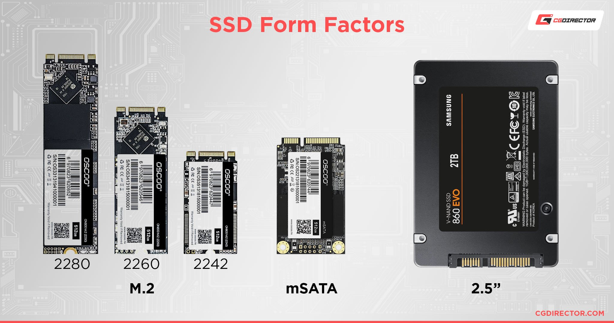
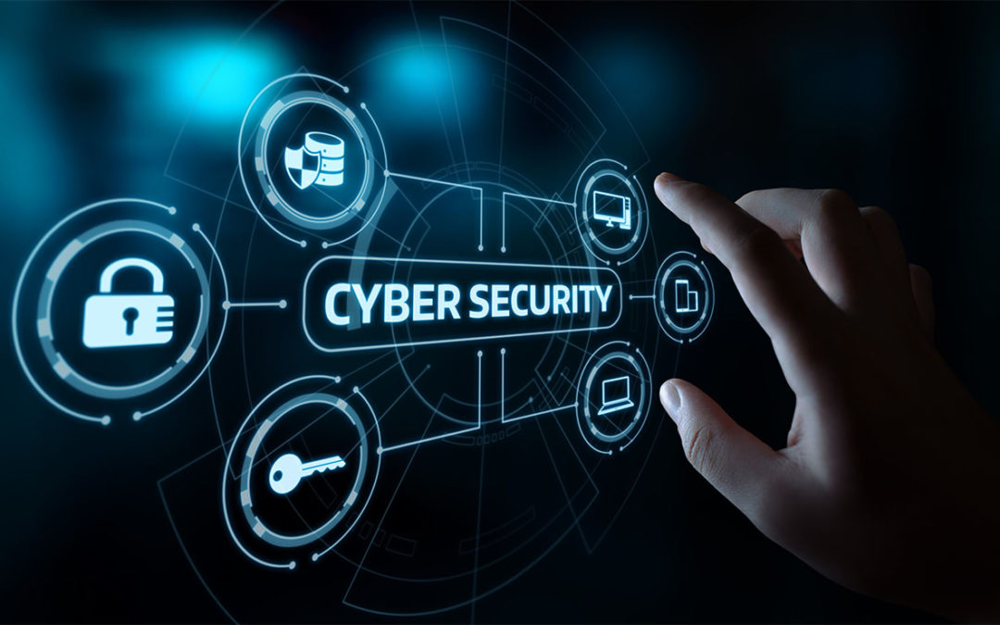

Documento de introducción a dos módulos clave del ciclo: Montaje de Equipos y Seguridad Informática.
El hardware es el núcleo del sistema. Aquí están los elementos esenciales para que un equipo microinformático funcione correctamente:
*(Imagen: Un disco SSD, un componente vital para el almacenamiento actual)*
5 Consejos de Ciberseguridad Básica
La seguridad pasiva y activa es crítica. Estos 5 consejos son la base para proteger cualquier sistema:
*(Imagen: Un concepto visual de protección digital y ciberseguridad)*
| Estrategias Fundamentales de Protección | |
|---|---|
| Contraseñas Robustas y Únicas | Usar combinaciones largas (más de 12 caracteres), con mezcla de tipos y, crucialmente, no repetir la misma clave en múltiples servicios. |
| Actualizaciones Periódicas (Parcheo) | Mantener el Sistema Operativo y el software de terceros al día para corregir vulnerabilidades de seguridad conocidas (exploits). |
| Doble Factor de Autenticación (2FA) | Añadir una capa de seguridad que requiere un segundo código (normalmente desde el móvil) además de la contraseña. Es la defensa más efectiva contra el robo de credenciales. |
| Copias de Seguridad (Backup) | Guardar regularmente los datos importantes en un medio externo y desconectado (regla 3-2-1). Permite la recuperación ante fallos de hardware o ataques de ransomware. |
| Uso de Antivirus/Firewall | El firewall bloquea el tráfico de red no autorizado, mientras que el antivirus/anti-malware protege contra códigos maliciosos conocidos en el equipo local. |
Para aprender más sobre Ciberseguridad, visita el Portal del Instituto Nacional de Ciberseguridad (INCIBE) (Este enlace se abre en una nueva pestaña).
Volver al índice© [Álvaro Marín Bravo] - Actividad HTML SMR